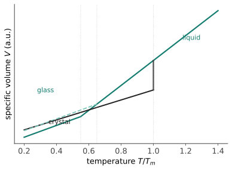

结构 IV · 非晶与玻璃：无序的秩序
如果冷却快到原子来不及排队，液体的乱序就被"冻结"成固体——非晶态（玻璃态）。窗玻璃、大部分塑料、光纤、手机屏的玻璃盖板、变压器的非晶合金带材都住在这里。本页回答三问：玻璃是什么（一个动力学身份而非热力学相）、玻璃转变发生了什么、无序换来了哪些独门性能。
1. 玻璃的身份：来不及结晶的液体
冷却熔体的两条命运（看比容-温度图）：慢冷 ⇒ 在熔点 \(T_m\) 结晶、体积突降（一级相变）；快冷 ⇒ 越过 \(T_m\) 不结晶（过冷液体），黏度指数飙升，到玻璃转变温度 \(T_g\) 附近原子运动"冻住"——曲线只是改变斜率、无突变。

三个身份判定：\(T_g\) 依赖冷却速率（快冷的玻璃"冻"得早、\(T_g\) 偏高）——真正的相变温度不会看你冷多快；玻璃在 \(T_g\) 下仍是热力学亚稳态（自由能高于晶体，只是动不了——放几百年的玻璃教堂窗并没有"流下来"，常温黏度对应的流动时标远超宇宙年龄，那个都市传说是假的）；结构上无长程序、有短程序（近邻配位仍讲究——径向分布函数只剩前几个峰，工艺 III 的衍射看得见：非晶衍射是弥散晕不是锐峰）。
2. 谁容易成玻璃：动力学竞赛
结晶要形核 + 长大（热力 III 的机器），都需要时间——玻璃形成能力 = 结晶动力学有多慢 vs 你能冷多快：
- 氧化物玻璃（SiO₂ 系）：网络状共价骨架黏度天然巨大，慢冷也成玻璃（窗玻璃 ~K/min 级即可）；网络改性剂（Na₂O 断网）降黏度降 \(T_g\)——钠钙玻璃便宜好熔的化学原因；
- 高分子：长链解缠排队极慢，多数聚合物天然半晶或全非晶（性能 III 详述结晶度光谱）；
- 金属：原子是圆球、排队飞快——纯金属需 ~\(10^{10}\) K/s（几乎不可能）；金属玻璃靠多组元大原子尺寸差"把队伍搅乱"（混乱原则），块体非晶合金临界冷速已降到 K/s 级【研：Inoue 三原则、Zr/Pd 基体系】。
3. 无序的独门性能（乱得其所）
| 性能 | 机理 | 应用 |
|---|---|---|
| 各向同性 + 无晶界 | 没有取向、没有界面 | 光学均匀（镜头、光纤——光纤损耗低至 ~0.2 dB/km 靠的是非晶均匀性 + 高纯） |
| 超高弹性极限（金属玻璃 ~2%，晶态金属 ~0.2%） | 没有位错可动——结构 III 的逻辑反用：无滑移通道 ⇒ 弹性段一路到底 | 高尔夫球杆面、精密弹簧、齿轮微件 |
| 软磁优异（非晶/纳米晶合金带材） | 无晶界钉扎磁畴 + 无磁晶各向异性 | 变压器铁损降 60–70%（功能 II 再会） |
| 透明（氧化物玻璃） | 无晶界散射 + 带隙大于可见光子 | 功能 III 讲"透明的条件" |
| 脆性（金属玻璃的阿喀琉斯之踵） | 变形集中在剪切带、无加工硬化 | 块体应用受限的主因【研：剪切带力学】 |
主线回响："缺陷决定命运"在此有一个镜像版本——金属玻璃强，是因为它连位错这种缺陷都没有；但也因此没有塑性缓冲。有序与无序各有其性能包，工程是在两者间选择与混合（部分结晶的微晶玻璃、非晶基复合材料——取两头）。
4. 数字感与反直觉
- 黏度刻度：熔融金属 ~\(10^{-3}\)、\(T_g\) 定义点 ~\(10^{12}\) Pa·s——十五个数量级的连续攀爬；
- 冷速谱：窗玻璃 K/min → 甩带法金属玻璃 \(10^6\) K/s → 纯金属所需 \(10^{10}\) K/s；
- 反直觉：玻璃不是慢冷的产物而是快冷的产物；"玻璃是液体"只在"结构像冻结的液体"意义上对、在"会流动"意义上错；金属玻璃比晶态同门强数倍——"完美无缺陷"的另一条实现路径不是完美晶体，而是彻底放弃晶体。
【研】对标 Varshneya《Fundamentals of Inorganic Glasses》；自由体积理论、脆性/强液体分类（Angell 图）、结构弛豫与老化是研究生玻璃物理的主干。
线一收官：晶体的秩序、缺陷的统治、无序的另类出路——材料"长什么样"讲完了。线二回答"为什么长成这样、能变成什么样"：热力学给方向，动力学给速度，第一站是材料人的地图——相图。